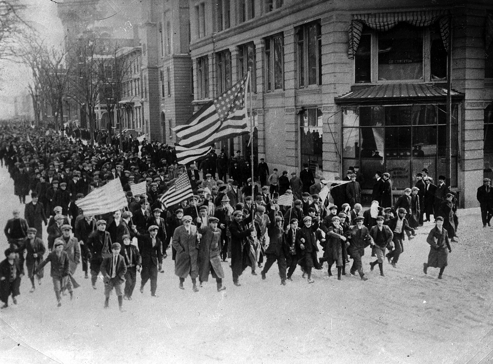
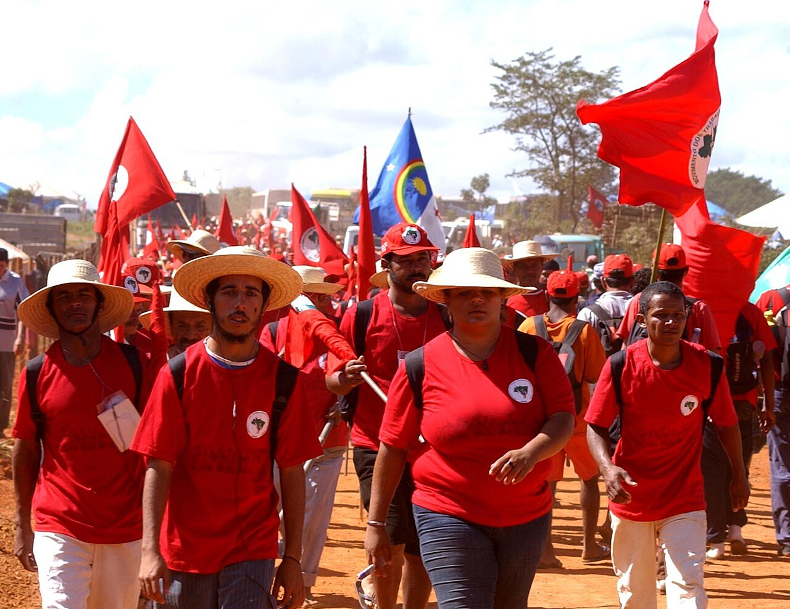
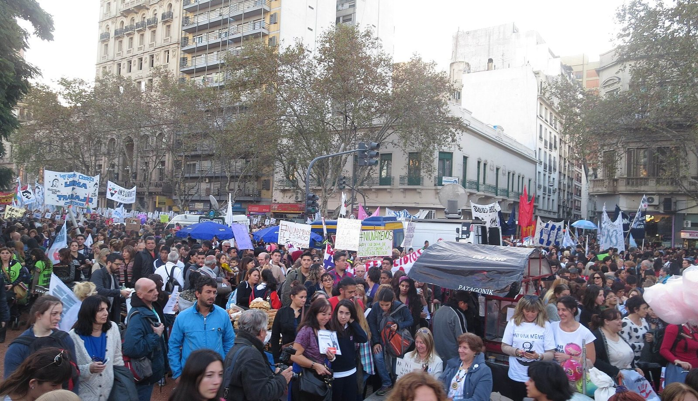
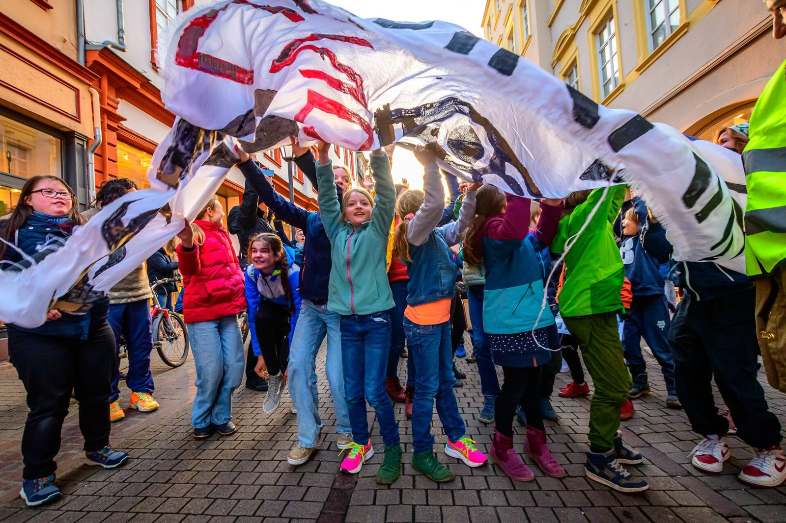

Cinco movimientos que se organizaron para reclamar derechos y cambiar la sociedad.
¿Qué es un movimiento social?Un grupo de personas que actúa en forma colectiva y organizada para defender una causa común y transformar algún aspecto de la sociedad.
1

Huelguistas marchan por Lawrence (EE. UU.) durante la huelga textil de 1912, conocida como «Pan y rosas».
Movimiento moderno
Movimiento obrero
¿Cuándo y dónde?
Siglo XIX, en Europa, con la Revolución Industrial.
¿Quiénes?
Trabajadores de fábricas, organizados en sindicatos.
¿Qué reclama?
Jornada de 8 horas, salarios justos y condiciones de trabajo dignas.
¿Cómo actúa?
Huelgas, sindicatos y movilizaciones.
1886Huelga en Chicago por las 8 horas: por eso el 1.º de mayo es el Día del Trabajador.
2Una Madre de Plaza de Mayo con el pañuelo blanco, el símbolo del movimiento (2008).
Derechos humanos · Argentina
Madres de Plaza de Mayo
¿Cuándo y dónde?
1977, en Buenos Aires, durante la última dictadura militar (1976-1983).
¿Quiénes?
Madres que buscaban a sus hijos detenidos-desaparecidos.
¿Qué reclama?
Memoria, verdad y justicia.
¿Cómo actúa?
Rondas de los jueves alrededor de la Pirámide de Mayo.
30/4/1977Primera ronda en Plaza de Mayo. Su símbolo: el pañuelo blanco.
3

Marcha del MST con sus banderas rojas en Brasilia (Brasil), en mayo de 2005.
Movimiento campesino · Brasil
Movimiento de los Sin Tierra (MST)
¿Cuándo y dónde?
Fundado en 1984, en Cascavel, Paraná (Brasil).
¿Quiénes?
Campesinos y trabajadores rurales sin tierra propia.
¿Qué reclama?
La reforma agraria: repartir la tierra para quien la trabaja.
¿Cómo actúa?
Ocupa tierras improductivas y forma asentamientos y cooperativas.
Lema«Ocupar, resistir, producir».
4

Marcha Ni Una Menos en Buenos Aires contra la violencia de género.
Movimiento de mujeres
Ni Una Menos
¿Cuándo y dónde?
2015, en Argentina; luego se extendió a otros países de América Latina.
¿Quiénes?
Mujeres, colectivos feministas y toda la sociedad.
¿Qué reclama?
El fin de los femicidios y de la violencia de género, e igualdad de derechos.
¿Cómo actúa?
Marchas masivas, campañas y redes sociales.
3/6/2015Primera marcha, frente al Congreso. Antecedente: la lucha por el voto femenino (1947).
5

Jóvenes en una marcha de Fridays for Future por el clima, en Heidelberg (Alemania).
Nuevo movimiento social
Movimientos ecologistas o verdes
¿Cuándo y dónde?
Desde las décadas de 1960 y 1970, en todo el mundo.
¿Quiénes?
Ciudadanos, organizaciones ambientales y jóvenes.
¿Qué reclama?
Cuidar el ambiente y frenar la contaminación y el cambio climático.
¿Cómo actúa?
Campañas, asambleas y huelgas por el clima.
2018Greta Thunberg inicia las huelgas escolares por el clima (Fridays for Future).